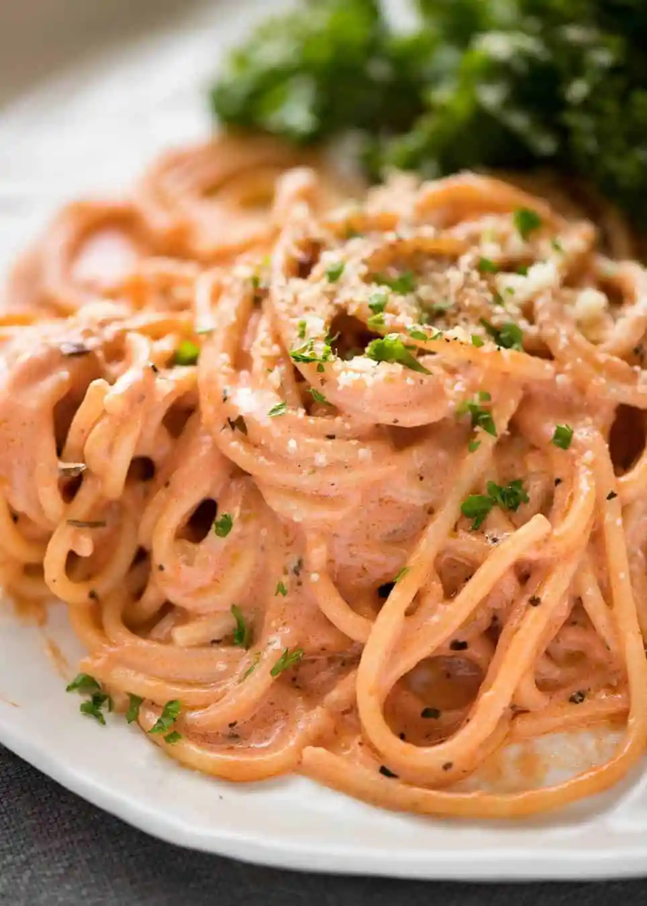

The spaghetti Diego Style

The finished meal should look like this, with the sauce being soft pink
It is just cooked spaghetti mixed whit milk cream, ketchup until the sauce is pink and than add some cheese
Ingredients Needed
- Spaghetti
- Ketchup
- Milk Cream
- Grated Cheese
- Shredded ham
- a big bowl
How To Make
- First cook the spaghetti as you like it
- On the big bowl, add some milk cream an then ketchup, stir with a spoon until the mix has no more ketchup lumps
- pour the spaghetti inside the bowl
- add more milk cream, ketchup, and add the pieces of ham
- Add the grated cheese as you like
Home